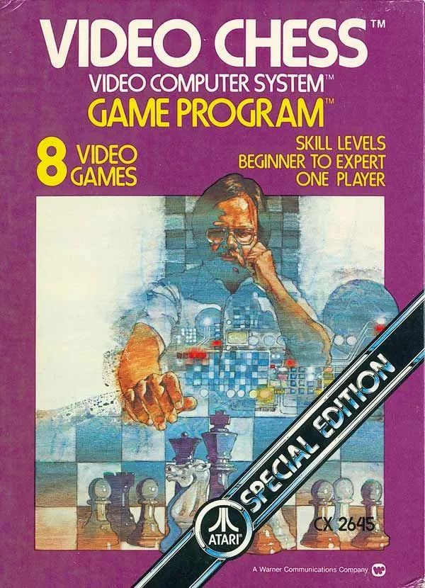

Video Chess exposed the limits of LLM reasoning
Originally posted on LinkedIn, July 31, 2025.
A 45-year-old chess program running on a computer with 128 bytes of memory beat Copilot and ChatGPT-4o. Not by mistake or luck, but in a head-to-head match.
Video Chess, an Atari 2600 game from 1979, recently defeated two of today's most advanced and widely discussed models. It did not win through creativity. It won through a structural understanding of the board, the rules, whose turn it was, and which moves were valid. In other words, logic of the kind LLMs simply cannot produce.
Technically, this is not surprising. Copilot and GPT do not think ahead. They do not know where the pieces are. They are not chess players, but word predictors. Their next-move predictions are based on language patterns, not state analysis.
But this is not only a technical issue. It is also a cultural one. At the same time that Video Chess is winning, billions of dollars are being poured into products that promise "artificial intelligence," "thinking assistants," and "logical partners." The gap between the promise and reality becomes clearer every time a data-heavy system fails to understand whose turn it is in a game.
It sounds funny at first, but it is a warning sign. When models that generate text are suddenly treated as "intelligence," even though they do not understand a move, a turn, or a goal, the problem may not be the models. It may be the expectations we created around them.
